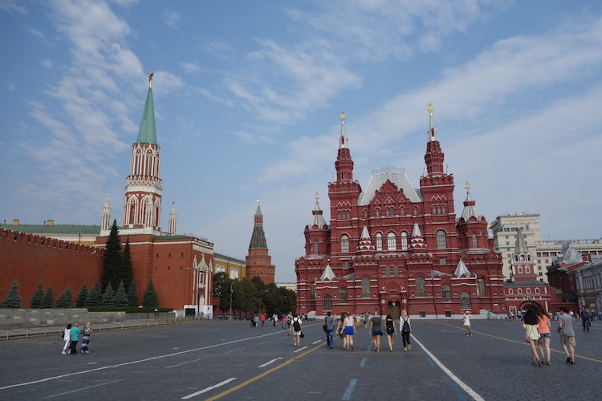

经典1日游
行程：红场——克林姆林宫——阿尔巴特街
景点介绍
#红场#
红场是莫斯科的中心，是重大历史事件的见证场所，也是俄罗斯重要节日举行群众集会、大型庆典和阅兵活动之处。这里也是莫斯科最古老的广场，虽历经修建改建，但仍然保持原样，路面还是过去的石块，已被鞋底磨得光滑而凹凸不平，但这却是来莫斯科的游客必去之处
交通：
公交车：可乘坐公交25路、无轨电车8路至Красная площадь站下车，向北步行2分钟即可。
地铁：可乘坐地铁Арбатско-Покровская线至Площадь Революции站下车，向西南方步行2分钟即可。
地址：Krasnaya ploshchad’, 3 Moskva

图：红场
#克林姆林宫#
克里姆林宫（Московский Кремль），位于莫斯科的心脏地带，是一组建筑群，已被评为世界文化遗产。它是俄罗斯国家的象征，世界上最大的建筑群之一。
“克里姆林”在俄语中意为“内城”、“城堡”，它的建筑形式融合了拜占庭、俄罗斯、巴洛克和希腊罗马等不同风格。如今，这座古城堡不仅是俄罗斯政府所在地，也是俄罗斯历代艺术珍品的储藏地。
开放时间：除周四以外，每天10：00–18：00
小贴士：
1.身穿短裤或衣冠不整，不得入内；
2.政府办公大楼、国会办公大楼谢绝游览。
交通：
地铁：可在列宁图书馆站（Библиотека им. Ленина）；剧院站（Театральная）；阿尔巴特站（Арбатская）；亚历山大花园站（Александровский сад）；松林站（Боровицкая）下车
公交车：К、12ц路，
无轨电车：1、2、12、44路
地址：Grand Kremlin Palace, Moscow

图：克林姆林宫
#阿尔巴特街#
阿尔巴特街（Arbat Street）是莫斯科市中心的一条著名步行街，是莫斯科市现存最古老的街道之一。虽狭小短促，只八九百米长，十来米宽，俄罗斯风情却非常浓厚，俄罗斯人称之为“莫斯科的精灵”。
在这方砖铺成的街道上，既能看到最传统、最古朴的东西，也能看到最现代、最时尚的玩艺儿。街道两侧，那些古色古香的老店，卖传统工艺的特色店铺，像古董一样陈列着，杂然相间的，却是非常时尚的咖啡店，服装店，精致的礼品店。
交通：
地铁：Smolenskaya 站（蓝线）或Arbatskaya 站（从西口出），后者靠近新阿尔巴特大街
地址：Ulitsa Arbat, Moscow
经典2日游
Day1：红场——克里姆林宫——圣巴索大教堂
Day2：莫斯科国家百货商场——莫斯科大剧院
景点介绍
#红场#
红场是莫斯科的中心，是重大历史事件的见证场所，也是俄罗斯重要节日举行群众集会、大型庆典和阅兵活动之处。这里也是莫斯科最古老的广场，虽历经修建改建，但仍然保持原样，路面还是过去的石块，已被鞋底磨得光滑而凹凸不平，但这却是来莫斯科的游客必去之处
交通：
公交车：可乘坐公交25路、无轨电车8路至Красная площадь站下车，向北步行2分钟即可。
地铁：可乘坐地铁Арбатско-Покровская线至Площадь Революции站下车，向西南方步行2分钟即可。
地址：Krasnaya ploshchad’, 3 Moskva
#克林姆林宫#
克里姆林宫（Московский Кремль），位于莫斯科的心脏地带，是一组建筑群，已被评为世界文化遗产。它是俄罗斯国家的象征，世界上最大的建筑群之一。
“克里姆林”在俄语中意为“内城”、“城堡”，它的建筑形式融合了拜占庭、俄罗斯、巴洛克和希腊罗马等不同风格。如今，这座古城堡不仅是俄罗斯政府所在地，也是俄罗斯历代艺术珍品的储藏地。
交通：
地铁：可在列宁图书馆站（Библиотека им. Ленина）；剧院站（Театральная）；阿尔巴特站（Арбатская）；亚历山大花园站（Александровский сад）；松林站（Боровицкая）；下车
公交车：К、12ц路，
无轨电车：1、2、12、44路
开放时间：除周四以外，每天10：00–18：00
小贴士：
1.身穿短裤或衣冠不整，不得入内；
2.政府办公大楼、国会办公大楼谢绝游览。
地址：Grand Kremlin Palace, Moscow
#圣巴索大教堂#
圣瓦西里主教座堂位于红场东南部，对面则是克林姆林宫的斯巴斯卡亚塔。 教堂虽不巨大，却在一个地基上集合了九间礼堂。该教堂的设计跟随了同时代的穹顶教堂风格，尤其是科洛缅斯科耶的耶稣升天教堂和季亚科沃的施洗约翰斩首教堂。
开放时间：
6-8月每天10：00-19：00，
5、9-11月每天10：00-18：00，
12-次年4月每天10：00-17：00。
闭馆前半小时停止售票。
交通：
地铁：可搭乘地铁1号线到猎人商铺站（Охотный ряд），搭乘2号线到剧院站（Театральная），或搭乘3号线到革命广场站（Площадь Революции），6号线、7号线到中国城站（Китай-город）。
公交车：搭乘公交车25路可也到达。
电 话：+7-495-6983304
官方网站：https://shm.ru
图：圣瓦西里大教堂
#莫斯科国家百货商场#
莫斯科国家百货商场位于红场东北角，又称国家百货公司，被当地人亲切的称作“古姆”。商场建成于19世纪，是俄罗斯最大的商场，是莫斯科最时尚的休闲购物场所之一。三排三层游廊式商场占地近25000平方米，店铺之多让人咋舌。即使不去购物，光是参观下这个商场的装潢和建筑也值得专程走一趟。
交通
地铁：猎人商行站（Охотный ряд），剧院站（Театральная），革命广场站（Площадь Революции），城墙站（Китай-город）；
公交车：25路，无轨电车1、2、8、12、16、25、33路
电话：+7-495-7884343
营业时间：周一至周日10：00-22：00
地址：ploshchad’ Krasnaya, д.3, Moscow
#莫斯科大剧院#
到俄罗斯，一定要看一场正宗芭蕾舞，莫斯科大剧院一定是首选。大剧院举世闻名，上演的芭蕾与歌剧也吸引了一批又一批来自世界各地的朝圣者。这里的热门票非常难订，一般在演出前三个月放出，主舞台剧目的票常在开售几天之内就被抢购一空。
交通：
地铁：搭乘地铁1号线至猎人商铺站（Охотный ряд）、卢比扬卡站（Лубянка），2号线至剧院站（Театральная），3号线至革命广场站（Площадь Революции），7号线至铁匠桥站（Кузнецкий мост）；
电车：搭乘1、2、9、12、25、33、45路无轨电车前往
门票：不同剧目票价各异，主舞台芭蕾约3000卢布起，歌剧约1000卢布起；新舞台芭蕾约1000卢布起，歌剧约800卢布起
电话：+7-495-2507317
地址：Theatre Square, 1, Moscow
图：莫斯科大剧院
深度2日游
Day1：红场——普希金国家美术博物馆——莫斯科国家百货商场
Day2：特列季亚科夫美术馆——高尔基公园——阿尔巴特街
景点介绍
#红场#
红场是莫斯科的中心，是重大历史事件的见证场所，也是俄罗斯重要节日举行群众集会、大型庆典和阅兵活动之处。这里也是莫斯科最古老的广场，虽历经修建改建，但仍然保持原样，路面还是过去的石块，已被鞋底磨得光滑而凹凸不平，但这却是来莫斯科的游客必去之处
交通：
公交车：可乘坐公交25路、无轨电车8路至Красная площадь站下车，向北步行2分钟即可。
地铁：可乘坐地铁Арбатско-Покровская线至Площадь Революции站下车，向西南方步行2分钟即可。
地址：Krasnaya ploshchad’, 3 Moskva
#普希金国家美术博物馆#
普希金博物馆位于莫斯科市克鲁泡特金街。原是一座地主庄园，当年普希金和他的十二月党人朋友经常在这里聚会。博物馆的一层大厅里设餐厅、咖啡馆、艺术品商店等，这座博物馆是莫斯科规模最大的文学博物馆。
开放时间：11：00 – 20：00，周四11：00 – 21：00，周一闭馆
门票：成人300卢布，学生及老人150卢布，18岁以下者免费
交通：搭乘地铁1号线至Kropotkinskaya站，向北步行约5分钟可到。
地址：ulitsa Volkhonka, 12, Moscow
图：普希金国家美术博物馆
#莫斯科国家百货商场#
莫斯科国家百货商场位于红场东北角，又称国家百货公司，被当地人亲切的称作“古姆”。商场建成于19世纪，是俄罗斯最大的商场，是莫斯科最时尚的休闲购物场所之一。三排三层游廊式商场占地近25000平方米，店铺之多让人咋舌。即使不去购物，光是参观下这个商场的装潢和建筑也值得专程走一趟。
交通
地铁：猎人商行站（Охотный ряд），剧院站（Театральная），革命广场站（Площадь Революции），城墙站（Китай-город）；
公交车：25路，无轨电车1、2、8、12、16、25、33路
电话：+7-495-7884343
营业时间：周一-周日10：00-22：00
地址：ploshchad’ Krasnaya, д.3, Moscow
#特列季亚科夫美术馆#
特列季亚科夫美术馆由维克多·瓦斯涅佐夫创建于20世纪初，与克里姆林宫隔岸遥望，最初的建筑格局类似于一栋古老的贵族城堡，经过近一个世纪的改建和扩建后，这里已经成为了莫斯科重要的艺术殿堂。
地址： Lavrushinsky Lane, 10, Moscow
电话：+7-495-9570701
开放时间：周二、周三、周日10：00-18：00，售票处17：00关闭。周四、周五、周六10：00-21：00，售票处20：00关闭。周一闭馆
交通
搭乘地铁6号线或8号线至Tretyakovskaya站后，向西步行约5分钟可到。
地址： Lavrushinsky Lane, 10, Moscow
#高尔基公园#
高尔基公园也被称为“文化公园”（Park Kultury），内部有植物园和游乐场，是莫斯科人休闲的好去处。公园的主入口甚是华丽，彩色旗帜飘扬，伴随而来的还有在园内经常举办的传统酒会的欢快之声。
2011年公园经过了改造，现在已经是潮人聚集地了，除了新增了不少氛围独特的咖啡厅，还有露天电影院，园内覆盖有免费wifi，还会经常举办一些展览。
电话：+7-495-9950020
交通：搭乘地铁5号线至Oktyabrskaya站后，向西步行约5分钟可到。
图：冬日的高尔基公园
#阿尔巴特街#
阿尔巴特街（Arbat Street）是莫斯科市中心的一条著名步行街，是莫斯科市现存最古老的街道之一。虽狭小短促，只八九百米长，十来米宽，俄罗斯风情却非常浓厚，俄罗斯人称之为“莫斯科的精灵”。
在这方砖铺成的街道上，既能看到最传统、最古朴的东西，也能看到最现代、最时尚的玩艺儿。街道两侧，那些古色古香的老店，卖传统工艺的特色店铺，像古董一样陈列着，杂然相间的，却是非常时尚的咖啡店，服装店，精致的礼品店。
交通：
地铁：Smolenskaya 站（蓝线）或Arbatskaya 站（从西口出），后者靠近新阿尔巴特大街
地址：Ulitsa Arbat, Moscow
深度3日游
Day1：普希金国家美术博物馆——莫斯科大剧院
Day2：特列季亚科夫美术馆——新圣女公墓——莫斯科大学
Day3：高尔基公园——莫斯科国家百货商场——普希金咖啡馆
景点介绍
#普希金国家美术博物馆#
普希金博物馆位于莫斯科市克鲁泡特金街。原是一座地主庄园，当年普希金和他的十二月党人朋友经常在这里聚会。博物馆的一层大厅里设餐厅、咖啡馆、艺术品商店等，这座博物馆是莫斯科规模最大的文学博物馆。
开放时间：11：00 – 20：00，周四11：00 – 21：00，周一闭馆
门票：成人300卢布，学生及老人150卢布，18岁以下者免费
交通：搭乘地铁1号线至Kropotkinskaya站，向北步行约5分钟可到。
地理位置：ulitsa Volkhonka, 12, Moscow, Russia, 119019
#莫斯科大剧院#
到俄罗斯，一定要看一场正宗芭蕾舞，莫斯科大剧院一定是首选。大剧院举世闻名，上演的芭蕾与歌剧也吸引了一批又一批来自世界各地的朝圣者。这里的热门票非常难订，一般在演出前三个月放出，主舞台剧目的票常在开售几天之内就被抢购一空。
交通：
地铁：搭乘地铁1号线至猎人商铺站（Охотный ряд）、卢比扬卡站（Лубянка），2号线至剧院站（Театральная），3号线至革命广场站（Площадь Революции），7号线至铁匠桥站（Кузнецкий мост）；
电车：搭乘1、2、9、12、25、33、45路无轨电车前往
门票：不同剧目票价各异，主舞台芭蕾约3000卢布起，歌剧约1000卢布起；新舞台芭蕾约1000卢布起，歌剧约800卢布起
电话：+7-495-2507317
地址：Theatre Square， 1， Moscow
#特列季亚科夫美术馆#
特列季亚科夫美术馆由维克多·瓦斯涅佐夫创建于20世纪初，与克里姆林宫隔岸遥望，最初的建筑格局类似于一栋古老的贵族城堡，经过近一个世纪的改建和扩建后，这里已经成为了莫斯科重要的艺术殿堂。
地址： Lavrushinsky Lane, 10, Moscow
电话：+7-495-9570701
开放时间：周二、周三、周日10：00-18：00，售票处17：00关闭。周四、周五、周六10：00-21：00，售票处20：00关闭。周一闭馆
交通
搭乘地铁6号线或8号线至Tretyakovskaya站后，向西步行约5分钟可到。
地址： Lavrushinsky Lane, 10, Moscow
#新圣女公墓#
自1923年起，新圣女公墓成为名人公墓。这里长眠着26000多个俄罗斯各个历史时期的名人。在俄罗斯人的心中，新圣女公墓不是告别生命的地方，而是重新解读生命、净化灵魂的神圣地方。新圣女公墓饱含着浓厚的文化韵味，墓主的灵魂与墓碑的艺术巧妙结合，形成了特有的俄罗斯墓园文化。
电话：+7-499-2466614
开放时间：7：00-19：00。
门票信息：免费开放
交通
公交车：乘坐05、015、64、132路公交车，到达Улица Хамовнический Вал站；
地铁：坐到运动站（Sportivnaya，俄语Спортивная），再往西偏北方向步行至Luzhnetsky proezd大道，对面即是。
图：新圣女公墓
#莫斯科大学#
位于莫斯科河南岸的莫斯科大学建于1755年1月12日，是俄罗斯最古老、历史最悠久的一所大学，也是现在世界上公认的名校之一。莫斯科大学被称为“莫斯科七姐妹”之一，因其典型的斯大林风格建筑物而闻名于世。
电话：+7-495-9391000
网址：www.msu.ru
交通：地铁到达Воробьёвы горы （Vorobievi Gori麻雀山）或者Университет （Universitet大学站）下车
门票：非在校人员进入观赏需要登记
#高尔基公园#
高尔基公园也被称为“文化公园”（Park Kultury），内部有植物园和游乐场，是莫斯科人休闲的好去处。公园的主入口甚是华丽，彩色旗帜飘扬，伴随而来的还有在园内经常举办的传统酒会的欢快之声。
2011年公园经过了改造，现在已经是潮人聚集地了，除了新增了不少氛围独特的咖啡厅，还有露天电影院，园内覆盖有免费wifi，还会经常举办一些展览。
电话：+7-495-9950020
官方网站：park-gorkogo.com
开放时间：全天开放
交通：搭乘地铁5号线至Oktyabrskaya站后，向西步行约5分钟可到。
#莫斯科国家百货商场#
莫斯科国家百货商场位于红场东北角，又称国家百货公司，被当地人亲切的称作“古姆”。商场建成于19世纪，是俄罗斯最大的商场，是莫斯科最时尚的休闲购物场所之一。三排三层游廊式商场占地近25000平方米，店铺之多让人咋舌。即使不去购物，光是参观下这个商场的装潢和建筑也值得专程走一趟。
交通
地铁：猎人商行站（Охотный ряд），剧院站（Театральная），革命广场站（Площадь Революции），城墙站（Китай-город）；
公交车：25路，无轨电车1、2、8、12、16、25、33路
电话：+7-495-7884343
营业时间：周一-周日10：00-22：00
地址：ploshchad’ Krasnaya, д.3, Moscow
#普希金咖啡馆#
普希金咖啡馆的建筑是一座仿19世纪的宅邸，与其说是个餐厅，不如说这是“半个”景点。这也是一家由图书馆改建而来的餐厅，在游客圈里人气很旺，可以吃到地道的俄罗斯大餐。
普希金咖啡馆占据两层楼，一楼名为“药房”，供应标准菜单；二楼名为“藏书馆”，和一楼相比，二楼更为昂贵。但是，这里还是吸引了众多有钱人、美食家以及对正宗俄罗斯美食感兴趣的外国游客
电 话：+7-495-7390033
营业时间：24小时营业
交通：
地铁2号线，特维尔站（Тверская），西南方向，直线距离110米，即到餐厅；
地铁7号线，普希金站（Пушкинская），西南方向，直线距离190米，即到餐厅；
地铁9号线，契诃夫站（Чеховская），西南方向，直线距离310米，即到餐厅。
地 址：26-A Tverskoy Boulevard, Moscow